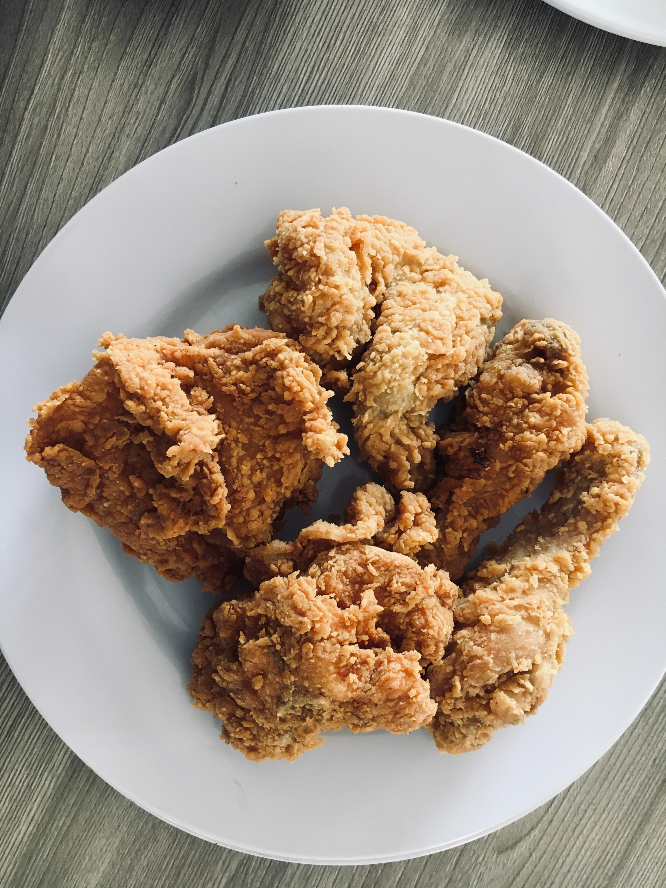

Fried Chicken

Crispy and Flavorful Fried Chicken
Description:
Indulge in the irresistible crunch and juicy tenderness of this homemade fried chicken recipe.
With a perfectly seasoned crispy coating, this dish is sure to satisfy your cravings for comfort food.
Gather your ingredients and follow our step-by-step instructions to create a mouthwatering feast!
Ingredients
- 1 whole chicken
- 2 cup buttermilk
- 2 cups all-purpose flour
- 2 teaspoons salt
- 1 teaspoon black pepper
- 1 teaspoon paprika
- 1 teaspoon garlic powder
- 1 teaspoon onion powder
- 1/2 teaspoon cayenne pepper (adjust according to your spice preference)
- Vegetable oil, for frying
Procedures
-
Marinating the Chicken
-
In a large bowl, place the chicken pieces and pour buttermilk over them.
Ensure the chicken is completely coated.
-
Cover the bowl with plastic wrap and refrigerate for at least 2 hours, or overnight for best results.
This step helps to tenderize the meat and enhance the flavors.
-
Preparing the Coating:
- In a shallow dish,
combine the all-purpose flour, salt, black pepper, paprika, garlic powder, onion powder,
and cayenne pepper.
-
Mix the dry ingredients thoroughly to ensure an even distribution of the seasonings.
-
Coating the Chicken:
-
Remove the chicken from the buttermilk marinade, allowing any excess to drip off.
-
Dredge each piece of chicken in the seasoned flour mixture, pressing gently to help
the coating adhere.
-
Place the coated chicken on a baking sheet or wire rack and allow it to rest for 15-20 minutes.
This helps the coating set before frying.
-
Frying the Chicken:
-
In a large skillet or deep frying pan, pour enough vegetable oil to submerge the
chicken pieces partially.
-
Heat the oil over medium-high heat until it reaches a temperature of 350°F (175°C).
-
Carefully place a few chicken pieces into the hot oil,
being cautious not to overcrowd the pan.
-
Fry the chicken for about 6-8 minutes per side, or until golden brown and cooked through.
Larger pieces may require additional cooking time.
-
Once cooked, transfer the fried chicken to a wire rack or paper towel-lined plate to drain
any excess oil.
-
Serving:
-
Serve the fried chicken hot as a main dish or as part of a hearty meal.
-
Accompany it with your favorite side dishes like mashed potatoes, coleslaw, cornbread,
or a fresh salad.